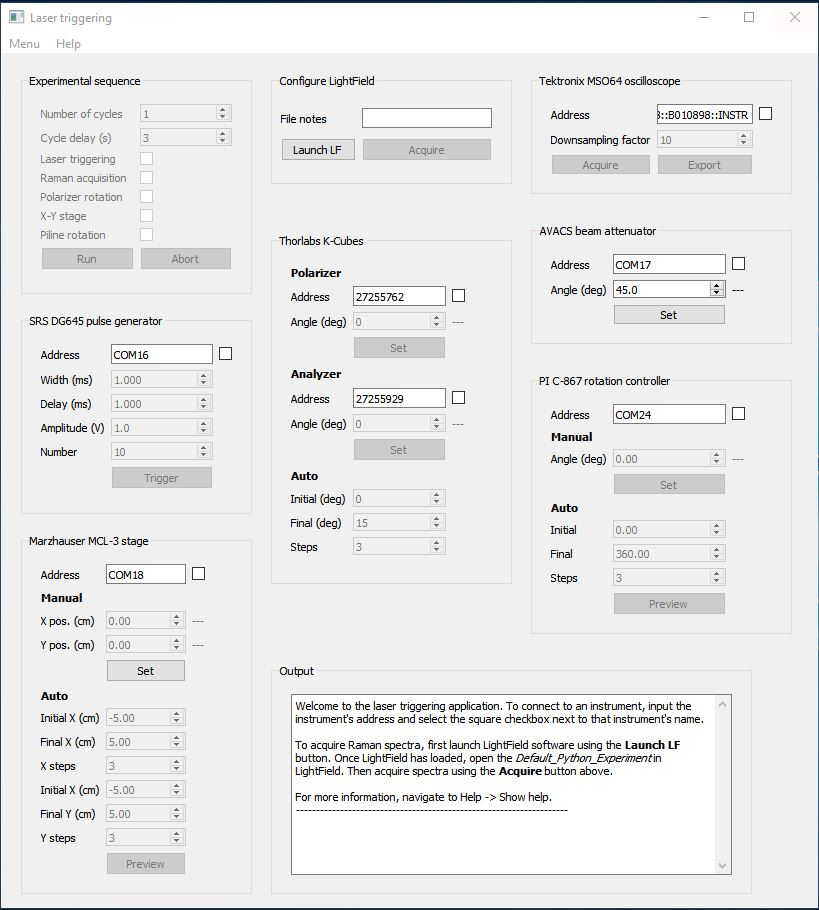

This respository contains code for an application which allows in situ spectroscopic characterization of materials during automated laser processing. The application controls triggering of laser pulses, acquisition of Raman spectra, acquisition of traces from an oscilloscope, and motorized control of optical polarizer/analyzer systems.
A screenshot of the user interface is shown below. 
The application can be started by opening a Python code editor running the app.py file. Alternatively, the software can be started using the RUN_LASER_TRIGGERING.bat Windows BAT file.
To view the avilable instrument ports, navigate to Menu -> Show avilable instrument ports. Addresses of each avilable VISA, serial, and FTID USB port will be printed in the output box. To connect with a particular instrument, navigate to the box for that instrument on the front panel of the GUI. Enter the appropriate address for the instrument in the Address field, and click the checkbox adjacent to the address field to connect to the instrument. For example: to communicate with the SRS DG645 pulse generator, enter the serial port address (e.g. COM6) in the address field and select the checkbox to connect to the device. The output box will indicate if connection to the instrument was successful. If the connection failed, check the instument address and connection to the PC. The user may also determine whether the instument can be identified by the PC using Windows Device Manager or National Instruments Measurement & Automation Explorer (NI MAX).
Notes: * Instruments may not be communicating properly unless they return an identification message in the outout box when the are connected. If instruments will not connect, check that their addresses are correct. * The application is set up to trigger pulses from the SRS DG645 using the A-B output. So when using the SRS DG645 as an external trigger for an auxilary laser, connect the DG645 A-B output to the laser external trigger input.
The photometer will not communicate with the PC if it has been left in an inconsistent state. To reset connection to the PC, unplug the USB cable from the photometer for 5 seconds and then plug it back in.
These controllers cannot be found by the computer if the import thorlabs_apt as apt command has been run before the controllers were connected to the PC. After they are connected, make sure the Python kernel has been restarted to allow initialization of APT.DLL while the controllers are connected and powered.
Make sure the "Joystick" knob on the front panel of the MCL-3 is in the "Auto" position. In the "Man" position, serial communication is disabled.
To acquire Raman spectra using Princeton Instruments LightField software, LightField must be opened from the GUI by clicking Launch LightField*. Once LightField loads, the user should load the LightField experiment called Default Python Experiment. After the experiment is loaded, settings can be modified in LightField. Raman spectra can be acquired by clicking the **Acquire Raman spectrum button the the GUI.
The Experimental sequence box contains options for running an automated experimental sequence. The sequence is started by selecting the Run button. Clicking Abort sequence will stop the sequence before it is complete. The sequence will initiate a procedure which runs Number of cycles times, with each cycle separated by Cycle delay number of seconds. Each checkbox that is checked in the Experimental sequence box will repeat during each cycle. For example, when Laser triggering, Raman acquisition, and Polarizer rotation checkboxes are all selected, the sequence will proceed as follows: 1. a list of polarizer angles is generated based on values in the Start angle, End angle, and Steps fields in the Thorlabs controllers box. 2. a Raman spectrum is acquired at each of the polarizer angles 3. the pulse generator is used to trigger laser pulses for material processing. The pulses are controlled by the pulse width, pulse delay, pulse maplitude, and number of pulses in the Pulse generator box. 4. Steps (2) and (3) are repeated Number of cycles times.
Each time a Raman spectrum is acquired, the spectrum is saved to a .csv file, and the application log file is appended. The log file contains the list of experimental parameters that were active during each Raman acquisition, as well as the filename of the Raman spectrum. The log file can be found by selecting Menu -> Show path to log file, and the location of Raman spectra can be viewed by selecting Menu -> Show acquisition file list.
To edit the user interface, use QT Designer. This installed by default with Anaconda. After Anaconda is installed, open the Anaconda prompt. In the command prompt, type designer and hit enter. The program QT Designer will open. Next, open the file ui.ui which is the unser-interface design file in this directory. The user interface can now be edited. Each widget on the user-interface can be named with a custom name, and this name will be called by the app.py file to assign functionality to the widget.
The main script which opens up the user-interface file is app.py. This script contains code for connecting each user-interface widget with associated functions to run when that widget is activated by the user. The script also calls other modules which control specific instruments. These are located inside the instr_libs directory. For example, the module srs.py inside the instr_libs directory contains code for controlling the SRS digital Delay Generator. In app.py, data is transferred between app.py and srs.py using the dictionary self.srs, which ocntains references to all SRS-related widgets on the user-interface.
Prior to use, Python libraries and dependencies must be installed. To install dependencies, it is recommended to use Anaconda (https://www.anaconda.com/distribution/#download-section).
To install all dependencies on a Windows 64-bit computer, create an Anaconda envinrment and populate it with the required dependencies by opening the Anaconda command prompt and running:
conda create --name env --file requirements.txt
where env is the name of the new environment.
After installation of the thorlabs_apt library, three files in the support_files directory must be copied to the thorlabs_apt directory and placed in the same folder as core.py: 1. APT.dll 2. ATP.lib 3. ATPAPI.h
This allows communication between Thorlabs instruments, Windows, and Python.
The PI_GCS2_DLL_x64.dll library must be placed inside the same folder as the piline.py script for communication between Python and the PI hardware.